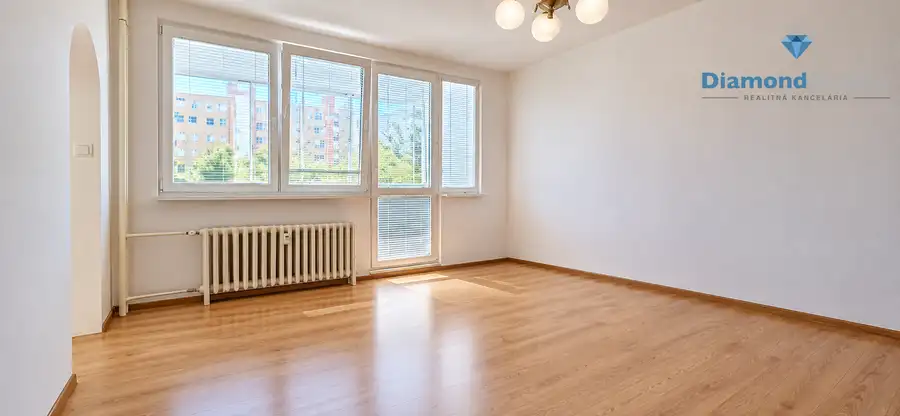
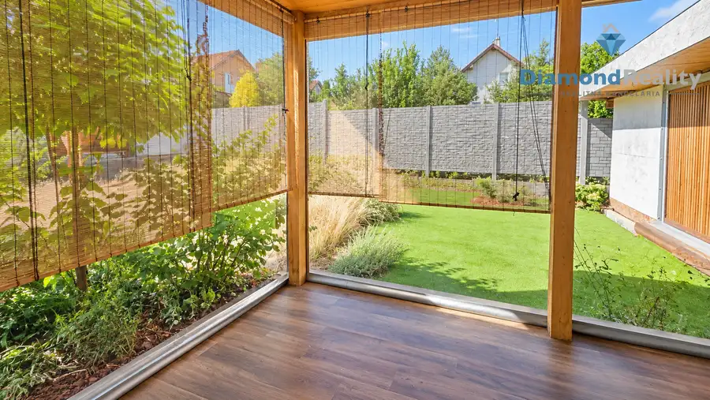
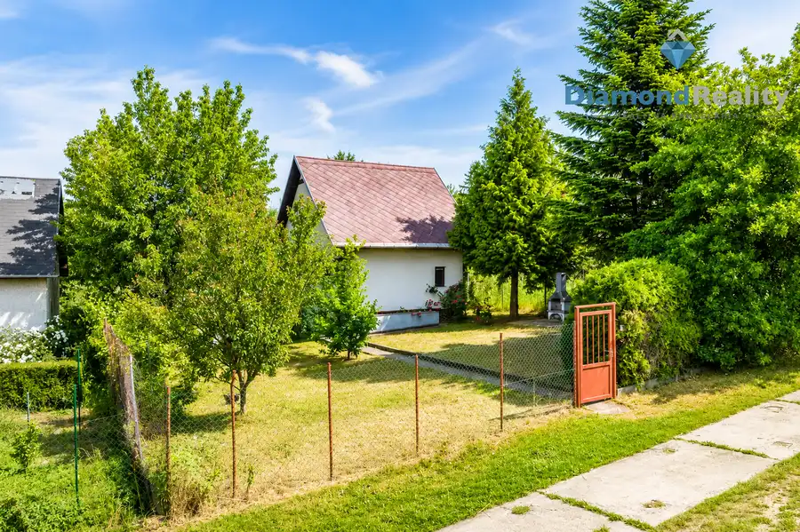

Ponúkam na predaj 3 izbový byt, Fibichová ul., Košice JUH
Juh, Košice
- Dispozícia3-izbový
- Plocha70 m²
- StavPôvodný stav
- VlastníctvoOsobné
O nehnuteľnosti
🏙️ "PREDANÝ" 3-IZBOVÝ BYT PRI CENTRE KOŠÍC | 70 m² Fibichová ul.✨ Prémiová mestská adresa. Priestor pre vlastnú víziu. Investícia s potenciálom.Diamond Reality – Mgr. Kamil Špegár ponúka na predaj priestranný 3-izbový byt pražského typu vo výbornej lokalite, len pár krokov od Auparku a historického centra Košíc.📍 Lokalita, ktorá má hodnotu✔️ centrum mesta na dosah✔️ kompletná občianska vybavenosť✔️ obchody, reštaurácie, kaviarne a MHD✔️ výborná dostupnosť bez potreby auta📐 Základné informácie:🏠 výmera: 70 m²🌿 uzavretá loggia: 6 m²🏢 poschodie: 2./7🔑 osobné vlastníctvo🛠️ pôvodný stav – ideálny na rekonštrukciuByt disponuje plastovými oknami, vnútorným šatníkom, kumbálom pred bytom a pivnicou. Bytové jadro je pôvodné, stúpačky sú už vymenené. 🏢 Bytový dom:✔️ zateplený✔️ nový výťah✔️ upravené spoločné priestory💎 Prečo práve tento byt?👉 skvelá poloha pri centre Košíc👉 priestranná dispozícia pražského typu👉 možnosť rekonštrukcie podľa vlastných predstáv👉 výborný potenciál na vlastné bývanie aj investíciu👉 atraktívna nehnuteľnosť na následný prenájom🔑 Byt, ktorý čaká na nový príbeh. Možno práve ten váš.📞 Mgr. Kamil Špegár💎 Diamond Reality📱 0905 982 116📧 spegar@diamondreality.sk🌐 www.kamilspegar.sk
Parametre
| Cena vrátane energií | Nie |
|---|---|
| Druh | 3 izbový byt |
| Dátum zverejnenia | 10. 8. 2026 |
| Plocha lodžie | 6 m² |
| Stav nehnuteľnosti | Pôvodný stav |
| Typ | Predaj |
| Vlastníctvo | Osobné |
| Vybavenie | Lodžia |
| Úžitková plocha | 70 m² |
Kde to je


Mohlo by Vás zaujímať

BytNové10 147 000 €Ponúkame 1 izbový byt na Predaj, Hemerková ul. KVP Sídlisko KVP, Košice 1-izbový36 m² 🏡 Mgr. Kamil Špegár – Diamond Reality ponúka na predaj 1-izbový byt s priestrannou loggiou na Hemerkovej ulici, Košice – Sídlisko KVP.Ponúkam na…
DomNové10 389 000 €Rodinný dom s vlastným podnikaním a 5 Apartmánmi v obci Budimír Budimír 200 m² 🏡 3-izbový rodinný dom s vlastným podnikaním a 5 apartmánmi – BudimírMgr. Kamil Špegár | Diamond Reality ponúka na predaj zaujímavú nehnuteľnosť v…
Chalupa, rekreačný domčekNové10 65 000 €Ponúkam na predaj Chatu so záhradou, Košická Polianka Košická Polianka 86 m² 🏡 Únik z mesta len pár minút od Košíc – miesto, kde čas plynie pomalšiePonúkame Vám na predaj útulnú murovanú chatu v nádhernom a pokojnom prostredí…